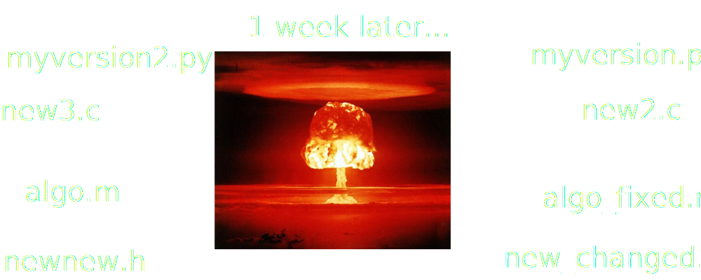

git
Introduction to collaborative coding


The problem

The problem

The problem

The problem

The problem

The problem

The problem

The problem

The problem

git
Why?
- keep entire project history
- fixed snapshots: commits
- for single devs
- for teams with thousands of devs
- work in parallel
How?
# initialize local repo
git init
# create file test.py
echo "print('hello world')" > test.py
# tell git to take care of test.py
git add test.py
# create a commit
git commit -m "add test.py"
git
commits and branches

git
sync with others
Setup
# tell git about the remote repo
git remote add origin \
git@github.com/user/repo.git# initial push with new remote
git push -u origin masterRegular usage
# sync changes from remote repo
git pull# sync changes to remote repo
git push
git
sync with others

git
hands on
- Create a github account or log in
- Go to https://github.com/andrenarchy/pull-request-please
- Create a fork
- Clone your fork:
git clone https://github.com/YOURUSERNAME/pull-request-please - Read
groupXX.txt